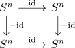
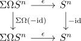
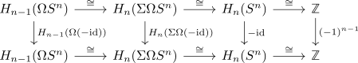

first conjugation on loop space of RP^n has the same degree as the antipode
Proposition
Let $- \mathrm{id}: S^n \rightarrow S^n$ be the antipodal map, w.l.o.g. homotopied to a base point preserving map (cf. bijection pointed and unpointed homotopy classes of maps into a simply connected anima), then the looped version $\Omega (- \mathrm{id}) : \Omega S^n \rightarrow \Omega S^n$ induces the map $(-1)^{n-1}: H_{n-1}(\Omega S^n) \rightarrow H_{n-1}(\Omega S^n)$.
Proof
We claim that $H_{n-1}(\Omega S^n) \cong \mathbb{Z}$ is isomorphic to the integers and an isomorphism is given by the counit $\Sigma \Omega S^n \rightarrow S^n$ and the suspension isomorphism: This follows e.g. from the james splitting $\Sigma \Omega \Sigma S^{n-1} \simeq \bigvee_{k \geq 0} \Sigma (S^{n-1})^{\wedge k}$, where the counit corresponds to the projection of a factor (alternatively, use counit of an element in the essential image of the left adjoint is split epi and the abstract computation of $H_{n-1}(\Omega S^n)$, possibly the serre spectral sequence may be also enough).
Now there exists a diagram

and we may take the adjoint to get

and pass to homology

where we have fixed the vertical isomorphisms, that is the suspension isomorphism, the counit and the orientations on $S^n$.
This shows that the degree of the map $H_{n-1}(\Omega (- \mathrm{id} )): H_{n-1}(\Omega S^n) \rightarrow H_{n-1}(\Omega S^n)$ coincides with the degree of the antipode map, i.e. is given by $(-1)^{n-1}$ (cf. degree of the antipodal map)